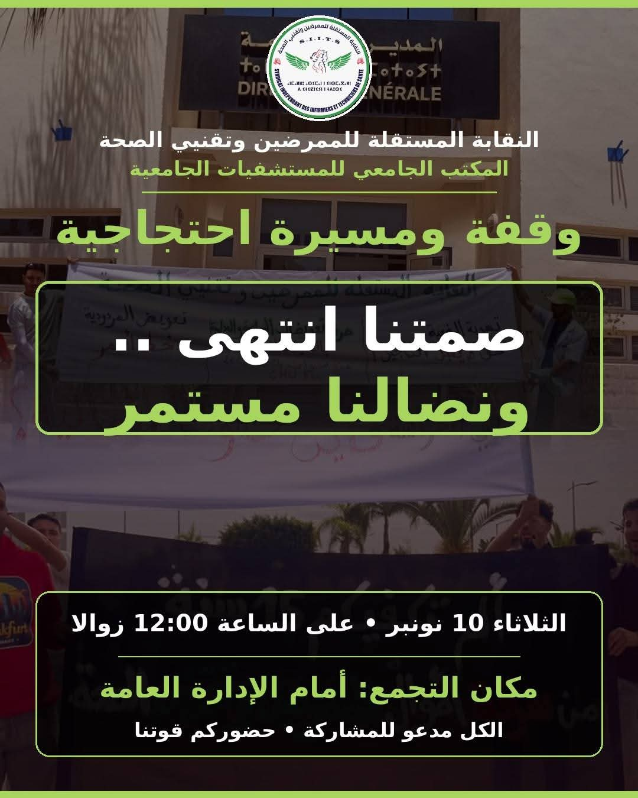

فاس: «صمتنا انتهى.. ونضالنا مستمر»، وقفة ومسيرة احتجاجية بالمستشفيات الجامعية يوم الثلاثاء 10 نونبر دفاعاً عن تعويضات الحراسة

«صمتنا انتهى.. ونضالنا مستمر»
يخوض المكتب الجامعي للنقابة المستقلة للممرضين وتقنيي الصحة بالمستشفيات الجامعية بفاس، بمعية المكتب الجهوي بجهة فاس-مكناس، وقفة احتجاجية تعقبها مسيرة يوم الثلاثاء 10 نونبر 2026، تنفيذاً للبرنامج النضالي الذي أعلنه في بيانه المستعجل الصادر يوم 17 أكتوبر 2026.
📍 مكان التجمع: أمام الإدارة العامة 🕦 11:30 بداية التجمع وتوزيع اللافتات 🕛 12:00 انطلاق المسيرة نحو إدارة مستشفى التخصصات، ثم الخروج إلى خارج أسوار المستشفى مروراً بالقرب من كلية الطب والصيدلة، والدخول من الباب المقابل لمركز تحاقن الدم 🕐 13:00 العودة إلى نقطة التجمع 🎙️ 13:15 كلمة الكاتب الجهوي والكاتب الجامعي وأعضاء المكتبين الجامعي والجهوي
وتأتي هذه الخطوة احتجاجاً على استمرار التأخر غير المقبول في صرف تعويضات الحراسة والمداومة المستحقة عن سنوات 2024 و2025 و2026، ورفض صرفها بالصيغة القانونية كما أقرها المرسوم رقم 2.25.1067 والقرار الوزاري رقم 650.26 المنشور بالجريدة الرسمية بتاريخ 9 أبريل 2026، وتعبيراً عن رفض سياسة التسويف والتماطل في تسوية الوضعية الإدارية والمالية للممرضين وتقنيي الصحة.
ويدعو المكتب الجامعي المشاركين إلى ارتداء الوزرة المهنية والالتزام بالانضباط والطابع السلمي والحضاري، مؤكداً أنه سيعقد اجتماعاً مباشرة بعد انتهاء الأشكال النضالية المسطرة لتقييم مآل الملف وتسطير برنامج نضالي أكثر تصعيداً، إلى حين صرف المستحقات كاملة.
الكل مدعو للمشاركة، حضوركم قوتنا. فلا حقوق تُنتزع دون نضال، ولا كرامة تُصان دون وحدة وتضامن.
فتح في تطبيق النقابة